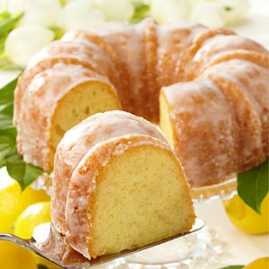

Начин на приготвяне:
Захарта и яйцата се разбиват с помощта на миксер. Разбивайки се добавя олиото и портокаловия сок.
Брашното се смесва с бакпулувера и ванилията. Тази смес се добавя към сместа с яйцата.
Разбива се всичко с миксер.
Настъргва се кора от лимон. Към част от готовата смес се добавя какао.
Във формичка се добавят смесите и най-отгоре се поставят орехите.
Пече се на 150 градуса 60 минути. |
 |